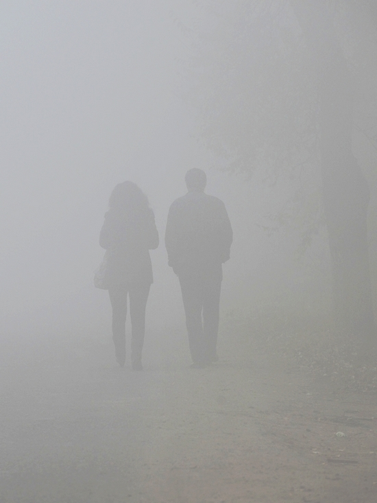

蔡奇表达了自己对北京空气质量的关切——蔡奇：我来北京工作以后，每天早起第一件事就是看天气，看当天的空气质量指数。现在社会对雾霾天气关注度很高，大家都工作、生活在北京，有这样的关切和焦虑，甚至是一些吐槽，我表示完全理解，感同身受。我对持续雾霾天气给广大市民生活带来的影响与不便，内心深感不安。蔡奇表达了自己对北京空气质量的关切——蔡奇：我来北京工作以后，每天早起第一件事就是看天气，看当天的空气质量指数。现在社会对雾霾天气关注度很高，大家都工作、生活在北京，有这样的关切和焦虑，甚至是一些吐槽，我表示完全理解，感同身受。我对持续雾霾天气给广大市民生活带来的影响与不便，内心深感不安。蔡奇表达了自己对北京空气质量的关切——蔡奇：我来北京工作以后，每天早起第一件事就是看天气，看当天的空气质量指数。现在社会对雾霾天气关注度很高，大家都工作、生活在北京，有这样的关切和焦虑，甚至是一些吐槽，我表示完全理解，感同身受。我对持续雾霾天气给广大市民生活带来的影响与不便，内心深感不安。蔡奇表达了自己对北京空气质量的关切——蔡奇：我来北京工作以后，每天早起第一件事就是看天气，看当天的空气质量指数。现在社会对雾霾天气关注度很高，生活在北民生活带来的影响与不便，内心深感不安。蔡奇表达了自己对北京空气质量的关切——蔡奇：我来北京工作以后，每天早起第一件事就是看天气，看当天的空气质量指数。现在社会对雾霾天气关注度很高，大家都工作、生活在北京，有这样的关切和焦虑，甚至是一些吐槽，我表示完全理解，感同身受。我对持续雾霾天气给广大市民生活带来的影响与不便，内心深感不安。蔡奇表达了自己对北京空气质量的关切——蔡奇：我来北京工作以后，每天早起第一件事就是看天气，看当天的空气质量指数。现在社会对雾霾天气关注度很高，生活在北生活在北民生活带来的影响与不便，内心深感不安。蔡奇表达了自己对北京空气质量的关切——蔡奇：我来北京工作以后，每天早起第一件事就是看天气，看当天的空气质量指数。现在社会对雾霾天气关注度很高，大家都工作、生活在北京，有这样的关切和焦虑，甚至是一些吐槽，我表示完全理解，感同身受。我对持续雾霾天气给广大市民生活带来的影响与不便，内心深感不安。蔡奇表达了自己对北京空气质量的关切——蔡奇：我来北京工作以后，每天早起第一件事就是看天气，看当天的空气质量指数。现在社会对雾霾天气关注度很高，生活在北